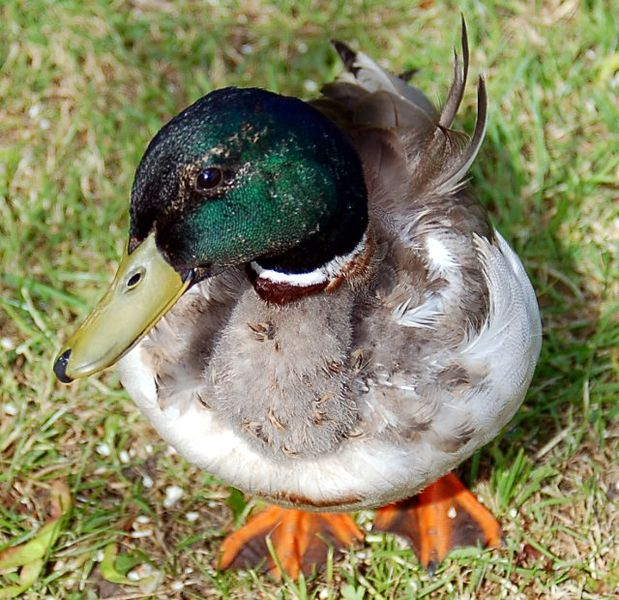

Here at Maple Farms, we raise our Ducks from birth so that they have a good life before being peacefully transferred into delicious edible meat.

What is a "happy life Duck"?
Well we like to put a lot of emphasis on their lifestyle before becoming food because they taste better if they were happy throughout their short lives. To assure that our Ducks are the best tasting to our loyal customers, we give each duck a name and treat them respect. We take them for walks, we train them to do tricks, and we even invite people to stop by and hang out with them. Of course it is sad to let them go but the taste makes it feel all better.
Click on the Duck Recipe page to see more about our famous dish!